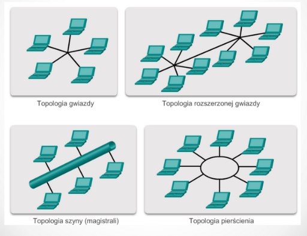

Sieci komputerowe (wykłady, semester 2)
Prowadzący: dr inż. Beata Marciniak
(uproszczony model, rzadziej stosowany)
- Warstwa aplikacji
- Warstwa transportowa
- Warstwa internet
- Warstwa dostępu do sieci
(bardziej rozbudowany model, z nim może być związane więcej zadań na kolokwium)
- aplikacji (dns, ftp, http, ntp, smtp, telnet)
- prezentacji (mime, tls, ssl)
- sesji (netbios, l2tp, pptp)
- transportowa (tcp, udp)
- sieciowa (ipv4, ipv6, icmp, ipsec, appletalk)
- łącza danych (atm, hdlc, arp, slip, ethernet, frame relay, ppp, x.25)
- fizyczna (strumień bitów odpowiednio zakodowany)
Łącza danych [2] -> switch [chociaż nowoczesne switche mają funkcjonalności warstwy 3]
Sieciowa [3] -> router
Warstwy 7,6,5 -> dane
Warstwa transportowa -> segment + datagram
Warstwa sieciowa -> pakiet
Warstwa łącza danych -> ramka
Warstwa fizyczna -> strumień bitów
Jednostka danych: strumień bitów
Warstwa fizyczna odpowiada za fizyczny przesył strumienia bitów odpowiednim medium. Odpowiada więc za to, jak wyglądają przewody, na jakiej częstotliwości jest nadawany sygnał bezprzewodowy, i wszystko to, co ma związek bardziej z fizyką, niż informatyką.
Jednostka danych: ramka
Posiada dwie podwarstwy - podwarstwę wyższą LLC i podwarstwę niższą MAC.
Podwarstwa LLC jest taka sama dla każdego medium transmisyjnego. Podwarstwa MAC natomiast odpowiada za interakcję z warstwą fizyczną i wygląda inaczej dla różnych mediów.
Zadaniem warstwy łącza danych jest przekazanie ramki do medium transmisyjnego lub odczyt ramki z tego medium i przesłanie jej wyżej. Warstwa łącza danych może też posiadać mechanizmy detekcji błędów.
Przykładowe protokoły tej warstwy: Ethernet, 802.11 WLAN, PPP, Frame Relay
Jednostka danych: pakiet
Warstwa wykonuje 4 główne operacje:
- Enkapsulacja: dane z warstwy 4 otrzymują nagłówek warstwy 3 wraz z adresami
- Deenkapsulacja: jeśli adres jest poprawny, a dane są przekazywane do warstwy wyższej
- Routing: dane są kierowane do odpowiedniej sieci za pośrednictwem routerów
- Adresowanie: warstwa sieci zapewnia mechanizmy adresowania (obecnie głównie używa się adresacji IPv4 oraz IPv6)
Warstwy sieci "nie interesuje", czy pakiety dotarły. Można to porównać do wysyłania listu na poczcie - wysyłając list nie mamy pojęcia, czy dojdzie do nadawcy i czy go odbierze. Z tego powodu protokół IP nazywany jest protokołem zawodnym.
- urządzenia [sieciowe i końcowe]
- media
- usługi [najważniejsze, bez usług nie byłoby po co robić sieci]
- na przykład komputery, drukarski sieciowe, telefony VOIP, kamery, smartfony, czytniki kart płatniczych
- dostępowe (koncentratory, przełączniki, bezprzewodowe access pointy)
- łączące sieci (routery)
- zapewniające bezpieczeństwo (zapory sieciowe)
- kable miedziane
- światłowody
- łączność bezprzewodowa

Topologia gwiazdy: przełącznik w centrum, do przełącznika podłączamy urządzenia końcowe i routery
Topologia gwiazdy rozszerzonej: tak jak wyżej, ale mamy więcej niż jeden przełącznik
Topologia pierścienia: dane wędrują od urzadzenia do urządzenia, tak długo, aż jakieś urządzenie je odbierze; topologia bardzo awaryjna, gdyż w przypadku awarii któregokolwiek urządzenia tracimy możliwość komunikacji
Topologia magistrali: urządzenia podłączone do wspólnego medium transmisyjnego; medium transmisyjne musi być zakończone tzw. terminatorem; topologia dość awaryjna, gdyż w przypadku awarii medium transmisyjnego żadne urządzenie nie może nadawać
- 10.0.0.0/8 - pula prywatna
- 172.16.0.0/12 - pula prywatna
- 192.168.0.0/16 - pula prywatna
- 127.0.0.0/8 - pętla własna
- 169.254.0.0/16 - adres lokalnego łącza, gdy nie znaleziono serwera DHCP (tak zwane adresy APIPA)
- 192.0.2.0/24 - testnet
- Unicast: transmisja między dwoma pojedynczymi urządzeniami
- Multicast: transmisja do wielu urządzeń naraz; adresy multicastowe mają pierwszy oktet w przedziale 224-239
- Broadcast: wysłanie danych na adres rozgłoszeniowy powoduje przesłanie tych danych do każdego interfejsu w podsieci
Adres jest 128 bitowy. Jest podzielony na 8 hekstetów, a każdy hekstet składa się z 4 liczb szesnastkowych. Każdy hekstet ma zatem 16 bitów.
Przykładowy adres:
2001:0db8:0000:0000:0008:0800:200c:417a
- Można pomijać zera wiodące w hekstetach
- Można jednorazowo pominąć hekstety zerowe i zastąpić podwójnym dwukropkiem
-
Unicast: komunikacja między dwoma pojedynczymi urządzeniami
-
Unikalne adresy globalne: adresy routowalne w Internecie
- trzy pierwsze bity to zawsze 001
- oznacza to, że adres jest postaci 2000::/3
-
Unikalne adresy lokalne: odpowiednik adresów prywatnych IPv4
- FC00::/7
-
Adresy łącza lokalnego: adres link-local
- ma go każdy interfejs
- (każde urządzenie IPv6 ma dwa adresy: link-local i ten normalny)
- adres jest w postaci FE80::/10
- Adres pętli zwrotnej: adres ::1/128
- Adres nieokreślony: adres ::/128
- Adres IPv4 wbudowany w IPv6
-
Unikalne adresy globalne: adresy routowalne w Internecie
-
Multicast: komunikacja od jednego urządzenia do kilku urzadzeń naraz
-
Przypisany: komunikacja do z góry ustalonych urządzeń
- Wszystkie węzły (to samo, co broadcast w IPv4)
- Wszystkie routery
- Solicited node: umożliwia odnajdowanie adresów MAC sąsiadujących urządzeń
-
Przypisany: komunikacja do z góry ustalonych urządzeń
- Anycast: komunikacja do najbliższego wyznaczonego urządzenia (analogia do dzwonienia na nr 112, gdzie połączenie odbiera najbliższa centrala powiadamiania ratunkowego)
-
SLAAC: bezstanowa wymiana komunikatów Router Advertisement & Router Solicitaiton
Adres hosta jest wtedy generowany na podstawie adresu MAC (procedura EUI-64) lub losowany - SLAAC + DHCP: router wysyła tylko część informacji, a o resztę (np o DNSy) trzeba zapytać serwera DHCP
- DHCP: działa tak jak w IPv4, obecnie rzadko używa się tej metody
instytucja odpowiedzialna za przyznawanie adresów IP, nazw domen internetowych, oraz za nadzór nad działaniem serwerów DNS na całym świecie
autonomiczna część IANA, zajmuje się domenami najwyższego rzędu i nadzorem nad DNS
operator polski, zajmuje się między innymi domenami pl